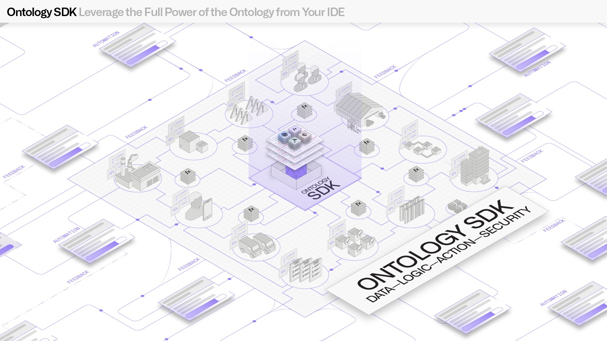
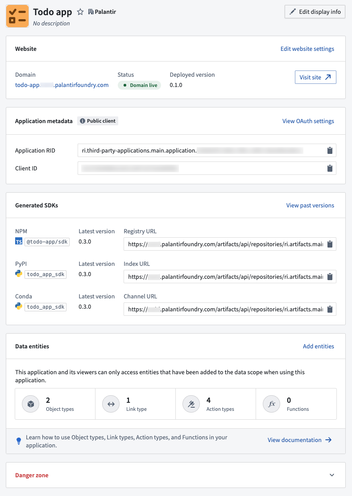
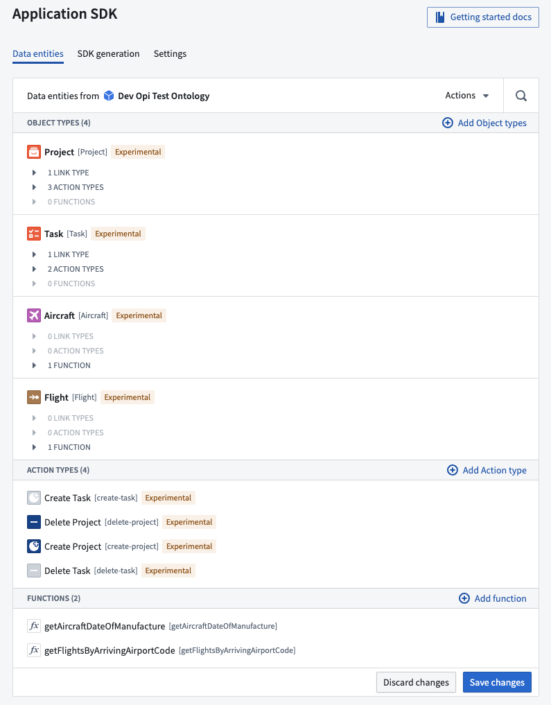

The Ontology Software Development Kit (OSDK) allows you to access the full power of the Ontology directly from your development environment. The OSDK supports npm for TypeScript, pip or Conda for Python, Maven for Java, and OpenAPI spec for any other language.
By treating Foundry as your backend, you can leverage the Ontology's robust ability to perform high-scale queries and Foundry writeback alongside granular governance controls to accelerate the process of securely developing applications that can power your organization.
:::callout{theme="note"} To create and manage OSDK applications, use Developer Console. This section covers SDK-specific reference documentation. :::
:::callout{theme="note"} If you define your Ontology in code rather than in the UI, consider creating a SuperRepo. A SuperRepo suits an Ontology and application that evolve together and that you want versioned and released as a single artifact. In a SuperRepo, your object types, links, and actions are declared with Ontology-as-code in the same repository as your functions and frontend. The OSDK is generated locally and regenerated whenever those definitions change. This means you can extend the Ontology and consume the new types within a single edit-and-preview loop, without republishing an SDK version between each change. :::

The OSDK was built to provide several primary benefits:
:::callout{theme="warning" title="Read-time enforcement only"} Row and column access controls (including restricted views, object security policies, and property security policies) filter what a user can read through the OSDK. Users can never read data they are not authorized to see. These controls do not extend to the OSDK response payload or to anything your application does with the data. To keep data protected as it flows downstream, pair these controls with a marking or Classification-based Access Control. For the full model, see Access control propagation. :::
Additionally, TypeScript bindings for frontend development provide a convenient way for developers to quickly build React applications on top of Foundry.

The generated code uses metadata about your Ontology, including property names and descriptions. You can view this metadata directly in your editor.
To build an application with the OSDK:
If you have an existing application that was bootstrapped without an OSDK, refer to Add an OSDK to a bootstrapped repository for integration instructions.
You can also use the OSDK within compute modules to interact with Foundry ontology objects from containerized applications.
This section contains language-specific API reference documentation: